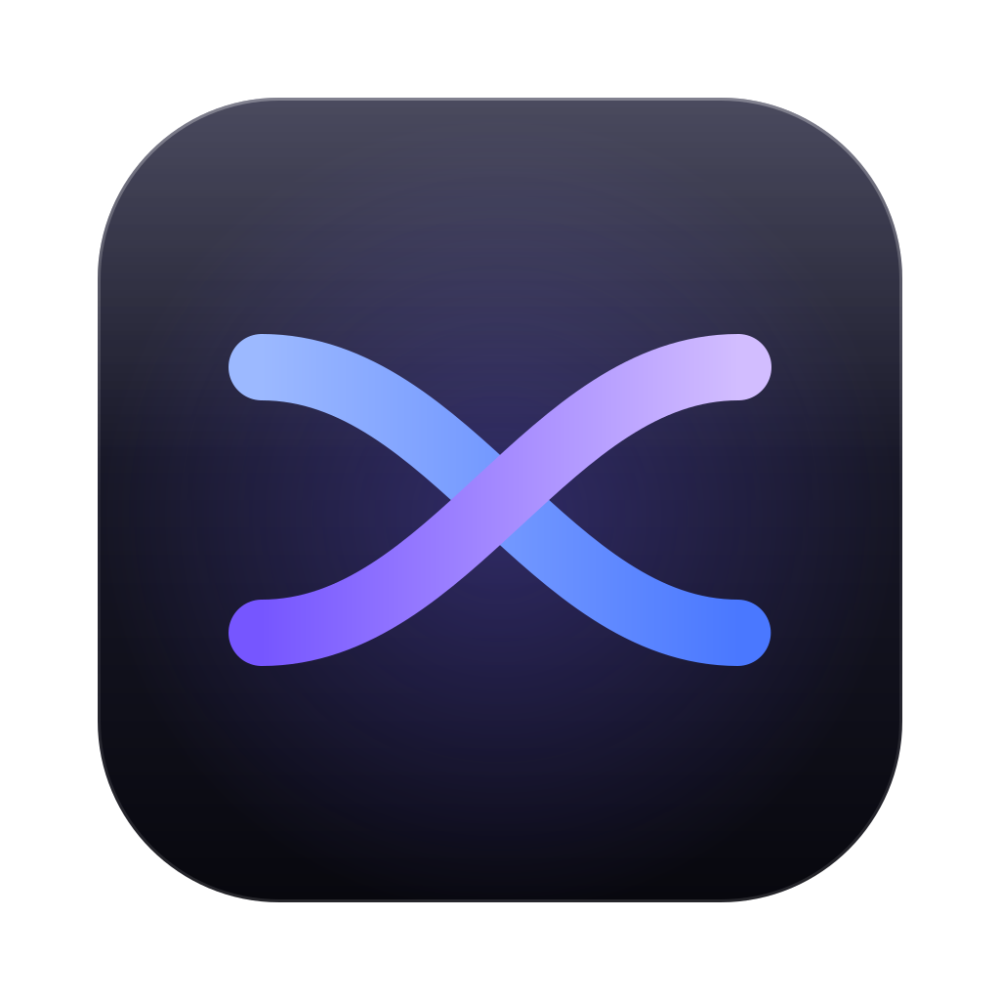
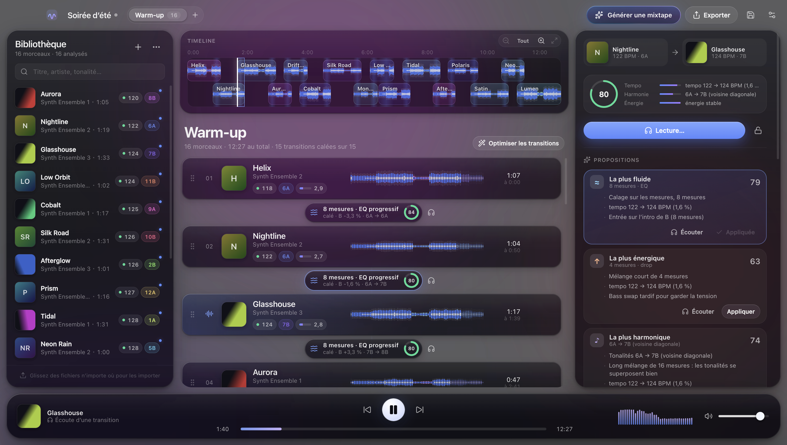

MixLab
Des mixtapes DJ automatiques
à partir de vos propres morceaux.
Calé sur les temps
Accords harmoniques
Ordre optimisé
Export en un seul MP3

Des mixtapes DJ automatiques
à partir de vos propres morceaux.
